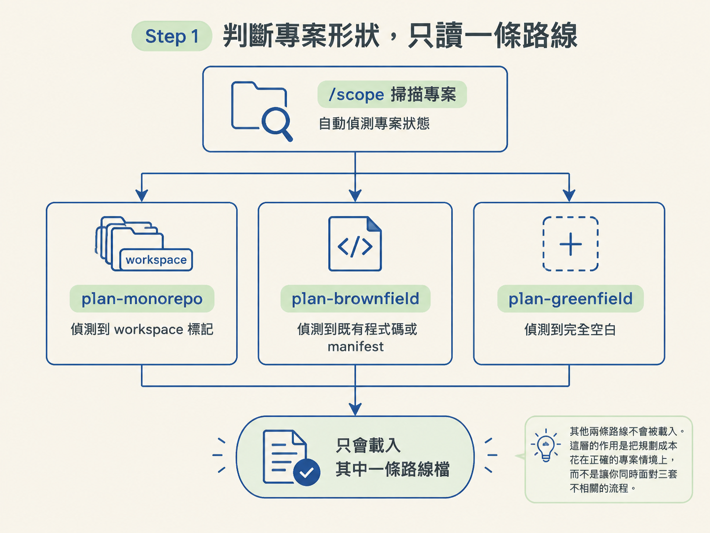
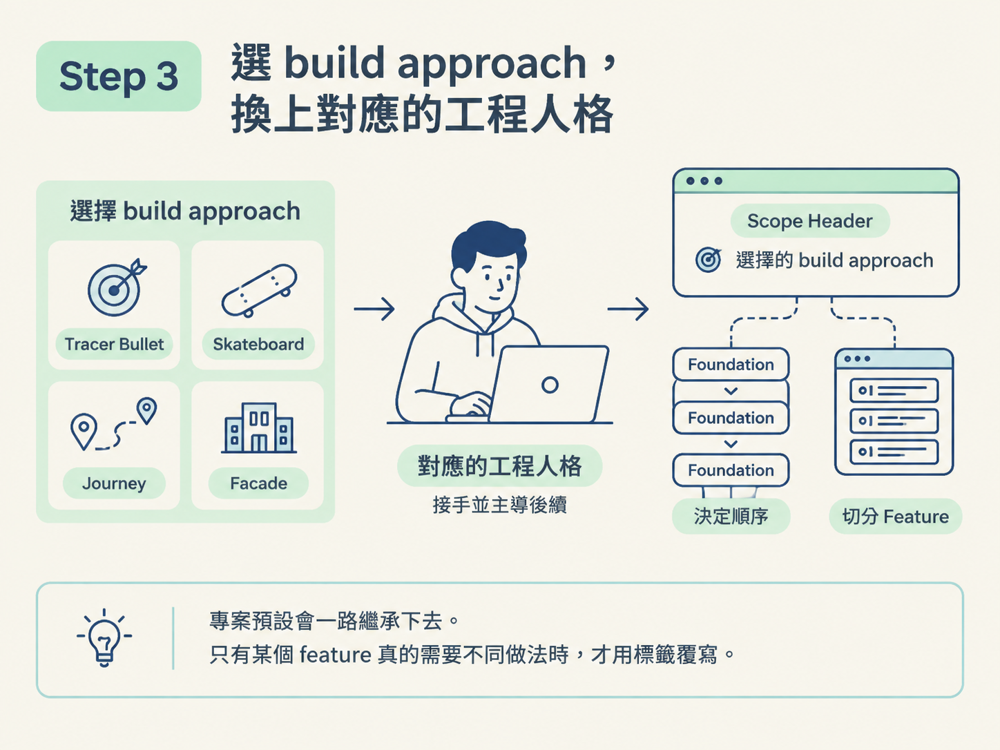
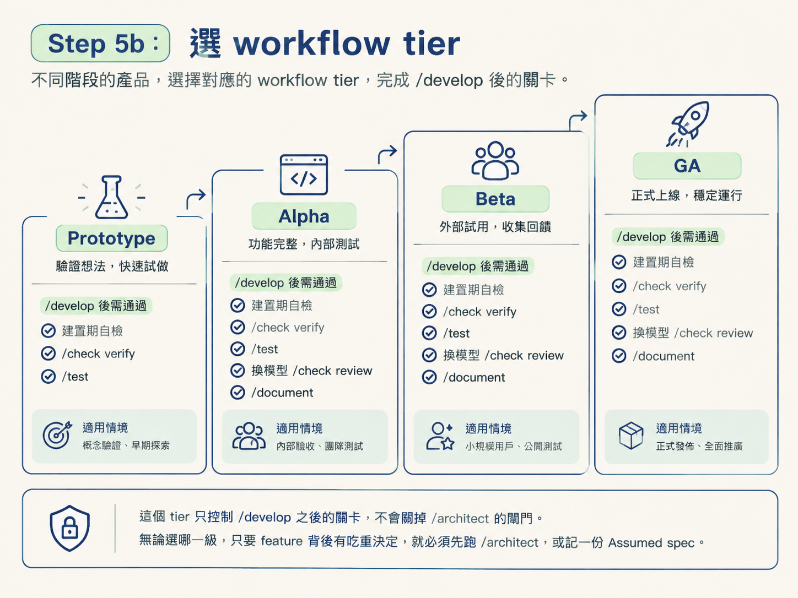
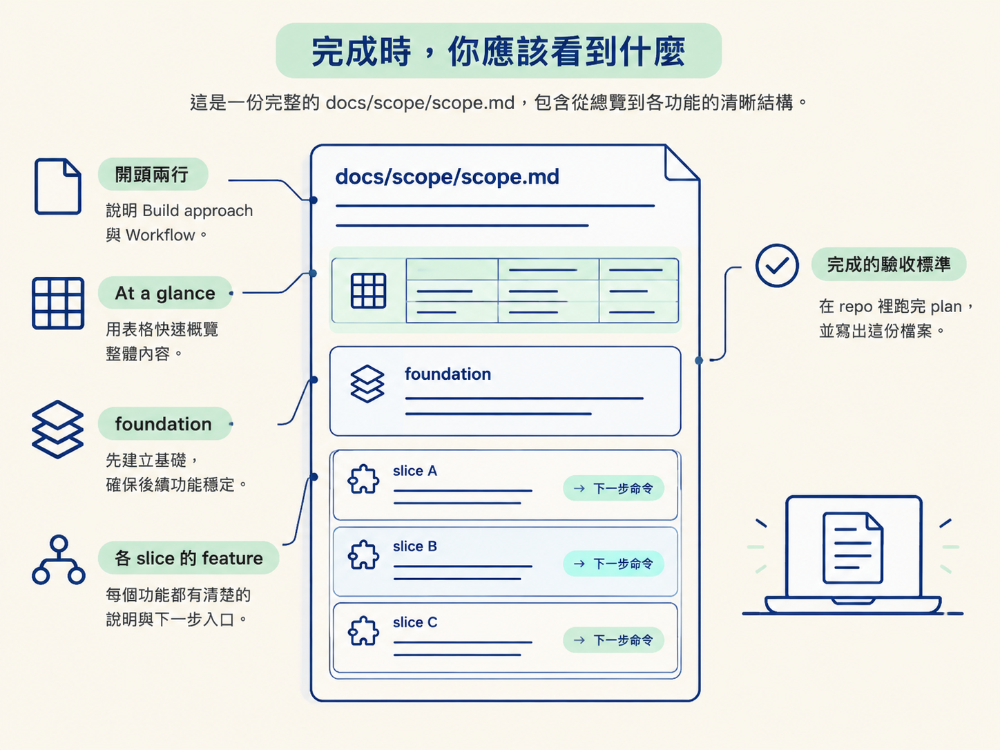

plan：三條路線、問題走訪與 workflow tier這一節要做的事很具體：在自己的專案上實際跑一次 plan，把一個產品級點子整理成可執行的 docs/scope/scope.md。完成後，你會得到一份有順序、有權重，而且能交給下一個 workflow 使用的 scope。
動手前只需要能用一兩句話說明兩件事：這個產品是什麼，以及它給誰使用。前三節已經說明 /scope 的職責、產出檔案與切法；這一節直接照實際順序完整跑一遍。每一步都會說明做了什麼，以及應該看到什麼結果。
plan，並準備好 idea/scope 會先檢查 docs/scope/ 或 .workflow/scope/ 是否存在，再決定行為。沒有 scope，而且你提供了一個產品級點子，就會走 plan 路線。
如果連點子都還沒有，它會先停下來問：
「你在蓋什麼？用一兩句話描述這個產品，或你想規劃的這一片。」
你的回答會成為後續規劃的輸入。在你說清楚要蓋什麼以前，它不會急著載入其他模式檔。
接著它會掃描專案，但會跳過 node_modules/ 與 .git/，確認三件事：
.ts、.py。有的話就是 brownfield 的訊號。AGENTS.md。根據掃描結果，它只會讀取下列其中一條路線檔：
其他兩條路線不會被載入。這樣做把規劃成本花在正確的專案情境上，你也不用同時面對三套不相關的流程。

這一步沒有固定腳本，也沒有固定輪數。/scope 會根據你的 idea 與 AGENTS.md，生成這個產品真正需要討論的規劃維度，再一批一批提問。每批最多 4 題，全部透過有推薦選項的 decision panel 呈現。
你已經說過的內容，它會自行推斷並跳過；只會追問尚未釐清的部分。至少要走過這幾組維度：
預期看到的結果是一輪輪的 decision panel：每一題都有推薦選項，也有一行推薦理由。它不會為了省時間而刪掉重要問題，也不會在仍有吃重維度沒釐清時提早結束。
問題走訪完成後，會出現 build approach 面板。面板列出四種具名 approach，每種都有一句原則描述，也會推薦其中一個：
你選定 approach 後，系統會讀取對應的人格檔，讓那位工程師角色主導接下來 Step 4 與 Step 5 的切法。選擇也會寫入 scope header：
**Build approach:** Tracer Bullet (垂直切片，每片都走完整層並可運作).專案預設會一路繼承下去。只有某個 feature 真的需要不同做法時，才用標籤覆寫。

無論選哪個 approach，都不會直接跳到功能切片。/scope 會先依 Step 1 判斷出的專案形狀，套用對應的 foundation 順序：
_root。產出的 feature 會帶有 Phase，例如 Foundation、Skeleton、Slice 2 或 Deferred。另外還會有跨整份 scope 的整數 Order，表示實際建置順序。
你應該看到 foundation 永遠排在功能 slice 前面。後面的功能就有地基可以依賴，不必每一片各自重新猜一次做法。
接下來，系統會根據前面的回答產出 feature 清單：先列 foundations，再列 slices，最後列出明確延後的項目。每個 feature 應該保持小，通常是一個頁面或一個完整單位；如果跨到無關的畫面，就拆成不同 feature。
每個 feature 都要填寫以下內容：
以下情況通常是 Needs spec: yes：需要選 provider / library、設計資料模型、決定跨切面模式或 design system、規劃尚未有 spec 的整頁畫面，或處理搜尋、篩選、推薦等非簡單行為。
如果只是純實作，而且已有 design.md、spec 或既有慣例覆蓋，才填 no。不確定時填 yes；標成 GA 或 Beta 的 feature 幾乎都應該是 yes。
這一步不會拆成建置任務。還沒設計的 feature，只有一個入口：
/architect <feature>。/develop <feature>。standards and tooling 這個 foundation 的第一個入口是 /audit。一個決定對應一份 spec。如果有好幾個不同決定，就各自建立一個 Needs spec: yes，不要把它們包成一份籠統的「策略」spec。
feature 清單完成後，系統會推薦整個專案的 workflow depth，也就是每個功能在 /develop 後還要再過幾關。推薦會根據產品訊號判斷，例如 throwaway prototype、內部工具、正式產品，或金流、認證、合規需求。
| Tier | /develop 之後跑什麼 | 什麼時候用它 |
|---|---|---|
Prototype | 什麼都不跑，只靠 develop 的建置期自檢與你的眼睛 | 拋棄式原型、實驗、個人專案 |
Alpha | /check verify，在真 app 上驗證 | 低風險功能、仍想被證明的內部工具 |
Beta | /check verify 再執行 /test | 多數正式產品 |
GA | /check verify、/test、換模型執行 /check review，再執行 /document | 高風險、金流、認證、合規、團隊專案 |
這個 tier 只控制 /develop 之後的關卡，不會關掉 /architect 的閘門。無論選哪一級，只要 feature 背後有吃重決定，就必須先跑 /architect，或記一份 Assumed spec。

選定的 tier 會寫進 header：
**Workflow:** Beta (check verify, then test). 專案預設的嚴謹程度。正式寫檔前，系統會再確認 scope 的位置，避免和隊友的檔案互相覆蓋。接著依 scope-template.md 寫入：
scope.md。citation 則由 Step 6b 的同意面板處理。它會詢問你是否要加入 References 與 (basis: …) 註記，預設選項是「不加，保持乾淨」。如果要引用，可以在兩種方式中選擇：
完成這一步後，scope 檔案就真的寫進專案，不只停在對話裡。
最後會印出完成報告，包含：
/scope 不會替你執行 /architect 或 /develop。它交付的是一份有順序、有權重、粒度仍然粗的清單；接下來你再照 feature 一個個往下走。報告通常會建議執行 /clear，讓下一個單位從乾淨的對話開始。
docs/scope/scope.md 的開頭會有兩行 header：
Build approachWorkflow接下來是 At a glance 表，再往下是 foundation 與各個 slice 的 feature 段落。每個 feature 都有自己的入口框，指出下一步該走哪個命令。
為什麼 foundation 要排在前面、為什麼工具選擇要延後，原理已經在前面兩節說明；這一節的驗收標準只有一個：你真的在 repo 裡跑完 plan，並寫出這份檔案。

plan的順序是：定位專案形狀，只讀一條路線 → 用生成的面板問清楚 → 選 build approach 並採用其人格 → 套用 foundations first → 切粗 feature，包含Needs spec判斷 → 選 workflow tier → 寫檔，先詢問 citation → 印出報告。跑完後，你手上會有一份docs/scope/scope.md，下一步就是處理第一個未打勾的入口框。
第一次規劃完成後，這份文件不會被冰封。隨著功能出貨，它會持續更新。下一節會處理另一個實際問題：為什麼功能已經做完，scope 上有些框仍然沒有打勾。